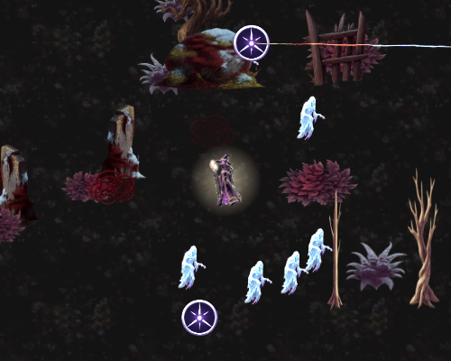
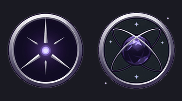

手搓廣告遊戲選集 · 吸血鬼復仇
四個原本數的是輸出而不是職業本身，改掉了。 星樞法師也做完——法輪的射程真的吃夜巫的 +15% 範圍，不只是主題貼合。
兩件都做完了。
血族領主 healed ×2 累計回復 2 倍最大生命
暗影行者 dodges ×25 閃避 25 次
元素使 spellKills ×150 用雷／隕石擊殺
亡者牧者 minionKills ×150 僕從打死 150 隻
月嚎將 lowHpTime ×90 低血狀態累計存活 90 秒
星樞法師 orbKills ×60 法輪打死 60 隻
殘影宗師 substitutes ×8 被分身替身擋下 8 次
因果法師 formations ×12 成陣 12 次
絕域獵手 farTime ×120 累計 120 秒身邊沒有敵人
血鎖裁判 thornsKills ×15 用反傷打死 15 隻
四個改動的理由都一樣——原本數的是輸出，不是那個職業本身：
| 職業 | 原本 | 現在 | 差在哪 |
|---|---|---|---|
| 血族領主 | 擊殺 400 | 回復 2 倍最大生命 | 它的本體是吸血與續戰 |
| 亡者牧者 | 擊殺 600 | 僕從打死 150 | 重點是「別人替你殺」 |
| 絕域獵手 | 遠處擊殺 200 | 累計 120 秒身邊沒敵人 | 它獎勵保持距離，不是遠處殺得多 |
| 月嚎將 | 低血擊殺 150 | 低血累計存活 90 秒 | 它獎勵待在那個狀態，不是那時殺幾隻 |
順手也改了兩個：暗影行者從「存活 5:36」改成「閃避 25 次」（它給 15% 閃避）， 血鎖裁判從「受傷 30 次」改成「用反傷打死 15 隻」（受傷只是前提，反傷才是它）。
資料驗證加了：任務類型不得是通用的 kills、而且十個之間不得重複。
重複代表兩個職業在數同一件事，那就沒有「專屬」可言。
這是月嚎將踩過的坑（計數器依賴職業本身 → 那個職業永遠拿不到）， 所以每一個都特別驗過：
healed（血族領主） 0.00 → 0.50 倍最大生命 ✓
lowHpTime（月嚎將） 0.3 → 3.8 秒 ✓
farTime（絕域獵手） 1.8 → 6.7 秒 ✓
dodges（暗影行者） 0 → 2 ✓
minionKills（亡者牧者）0 → 1 ✓ 僕從打死的有算到
healed只算真的補進去的量——快滿血時回 100 只補了 3 就記 3。 記名目值的話，滿血站著吃回血道具可以無限刷任務。

畫面中央是夜巫，兩個紫色法輪繞著她轉，右上那個正在射出光束。
2~4 個法輪繞著你自動射光束，射程吃你的範圍加成，代價是你自己的冷卻 ×1.15。
法輪 2 個（Lv1，2~4） 冷卻倍率 1.15 ✓
orbKills 0 → 1 ✓ 法輪真的在打死東西
法輪數量隨等級成長（每 18 級 +1，2 → 4）。
| 會移動 | 會死 | 本質 | |
|---|---|---|---|
| 屍語者的僕從 | 追敵人 | 會 | 一支軍隊 |
| 影忍的分身 | 跟著你 | 替你死 | 你的替身 |
| 星樞的法輪 | 鎖在你身上繞 | 不會 | 你身體的延伸 |
環繞沿用聖光書那套（Orbit 家族本來就每幀算角度繞玩家），
光束沿用連鎖閃電的線段特效 SpawnChainArc——兩個都是現成的。
所以只花了 $0.20 做法輪貼圖與職業徽記：

還沒出新的 TestFlight——build 46 是上一版的測試包。 要我出 build 47 把這兩項也放進去，說一聲。
→ 上一頁：build 46 測試包